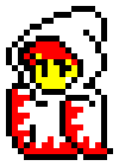

ff-batz

curl -s http://kui.github.io/ansi-pixels/entry/ff-batz.dat
ff-doushi

curl -s http://kui.github.io/ansi-pixels/entry/ff-doushi.dat
ff-galuf

curl -s http://kui.github.io/ansi-pixels/entry/ff-galuf.dat
ff-kuro_madoshi
curl -s http://kui.github.io/ansi-pixels/entry/ff-kuro_madoshi.dat
ff-shiro_madoshi
curl -s http://kui.github.io/ansi-pixels/entry/ff-shiro_madoshi.dat
metal_max-mosquito

curl -s http://kui.github.io/ansi-pixels/entry/metal_max-mosquito.dat